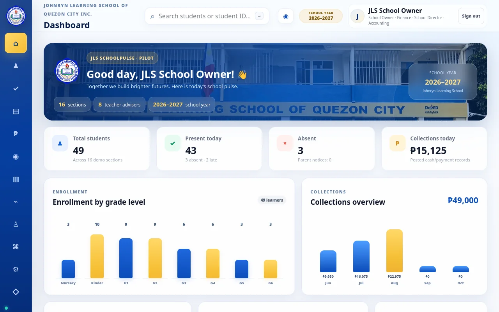
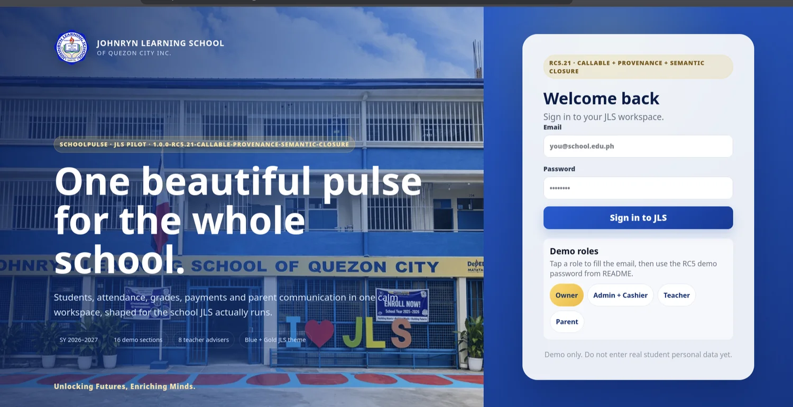

SchoolPulse / JLS Portal
A role-based school portal shaped around real school administration requirements, presented here with entirely simulated school records.

Why this exists.
A school runs on dozens of connected workflows: attendance, grades, communications, and collections. SchoolPulse explores a single workspace that makes those tasks easier to coordinate.
Key modules
- Role-specific interfaces for school leadership, teachers, administration and families
- Attendance, collections, and enrollment reporting concepts
- Staged validation and QA around controlled changes
Built with direction and review.
My role: Requirements planning, UI direction, AI-assisted development coordination, testing and release review.
Where AI helped: Structured specifications and assisted software iteration, with review of changes and evidence instead of accepting claimed fixes.
The project uses versioned release candidates and validation reports. A screenshot of a demo dashboard does not establish production readiness.
Current limitation: Pilot and active development. Uploaded screenshots are demo states, not a verified production deployment.
Inside the project.

Screenshots come from the uploaded development/demo materials. Click any image to expand.
Work that can be inspected.
Explore the demonstration where available, or return to the full portfolio to see more work.